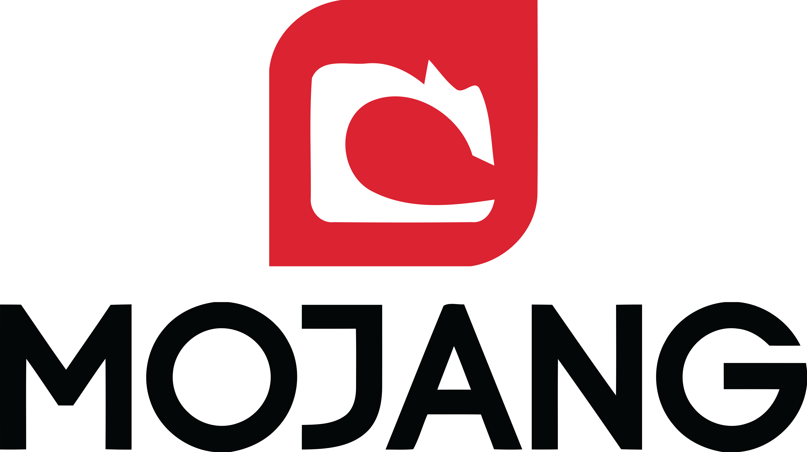

Mojang Studios is a renowned Swedish video game development company widely recognized for its creation of the immensely popular sandbox game, Minecraft. Founded in 2009 by Markus Persson, Mojang's primary focus has been the development, maintenance, and expansion of the Minecraft franchise. The company's commitment to innovation and player engagement has led to Minecraft becoming a global cultural phenomenon, allowing players to explore and create within a procedurally generated 3D world. Mojang's dedication to fostering creativity and community interaction has resulted in continuous updates and expansions to the game, ensuring its longevity and widespread appeal across various platforms. In 2014, Microsoft acquired Mojang Studios, further solidifying its influence within the gaming industry while still maintaining the studio's autonomy in game development.
